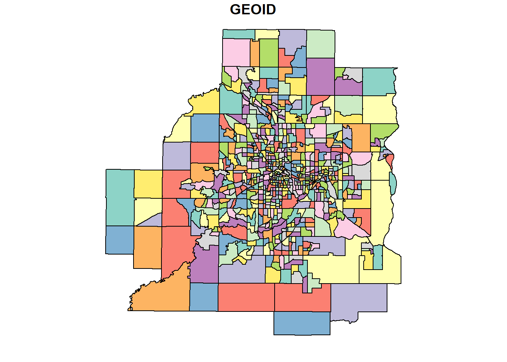
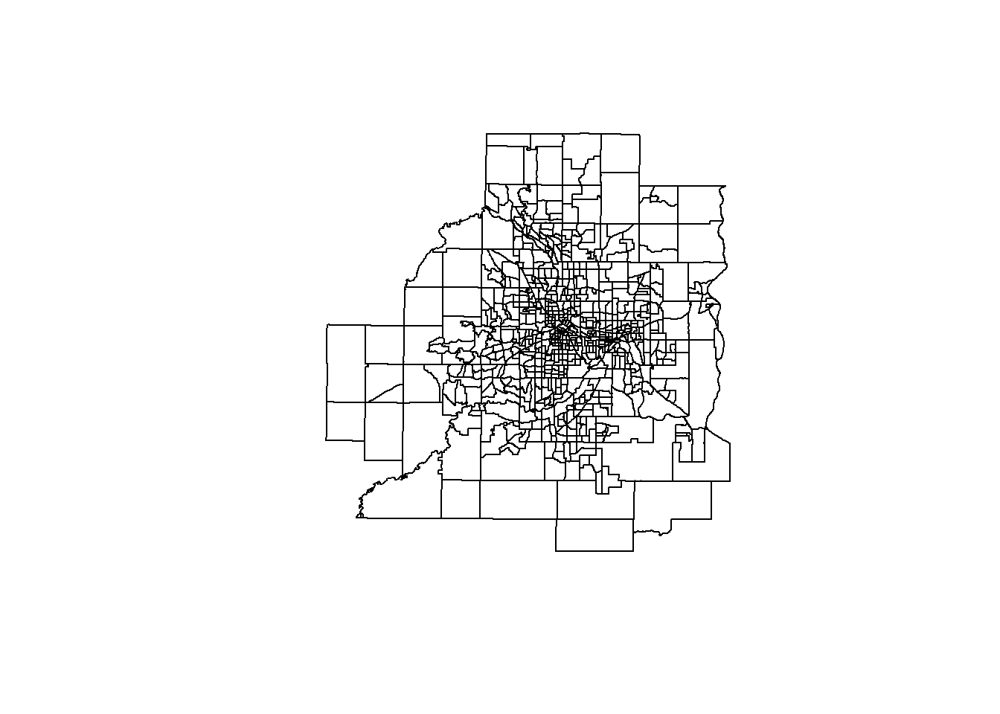
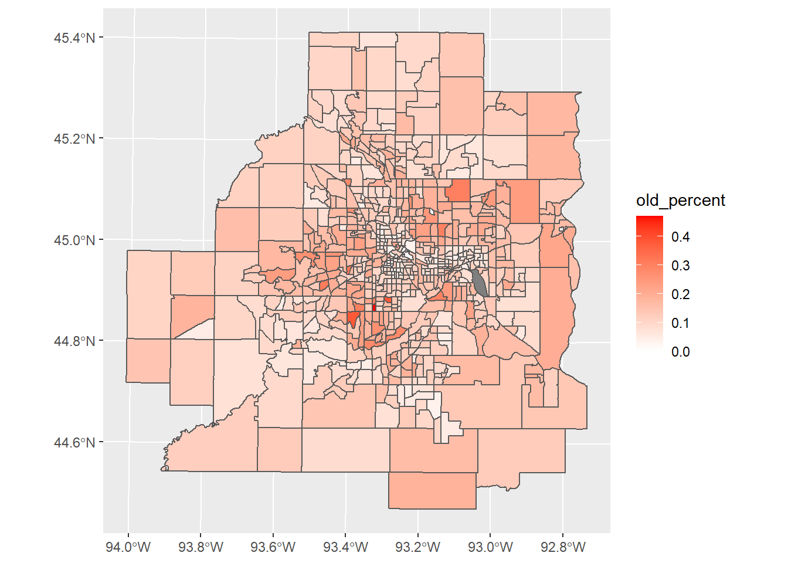
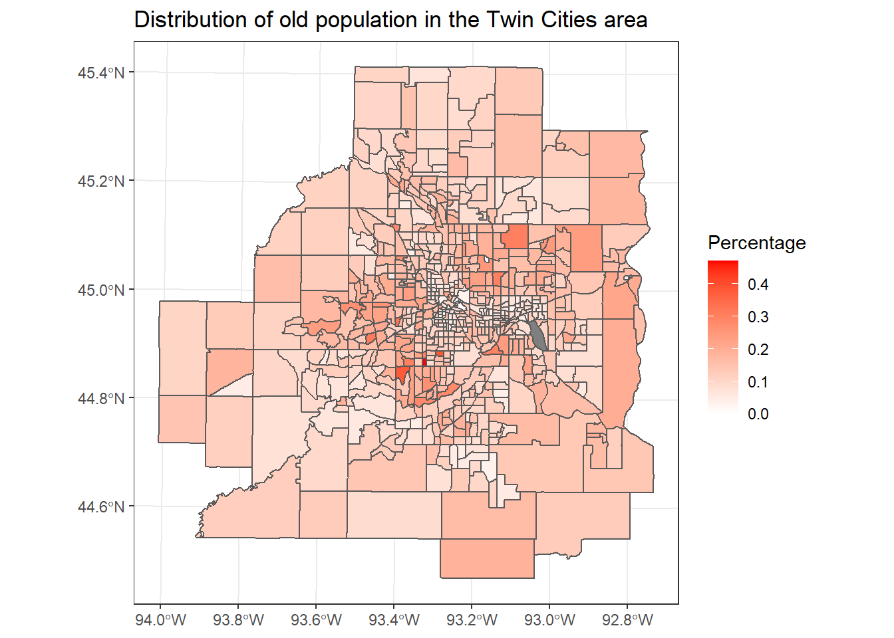
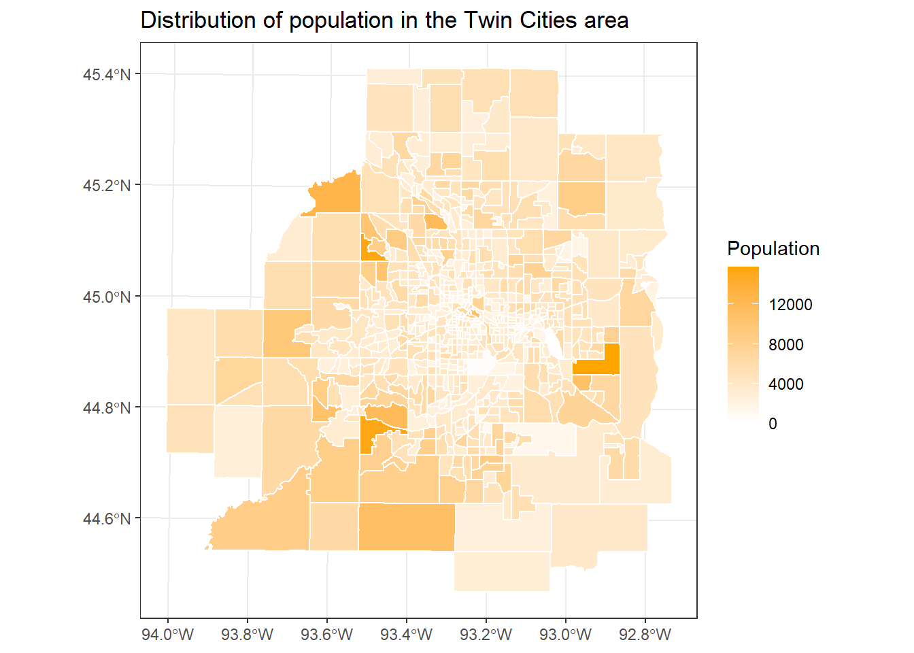
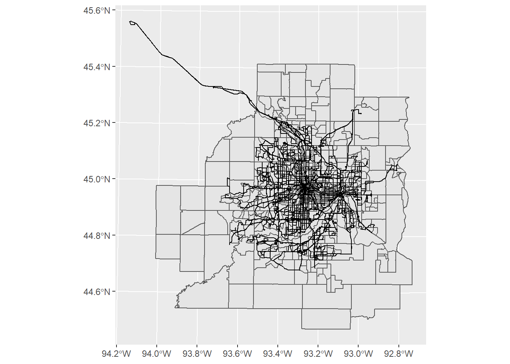

Chapter 9 Spatial Data Visualization
In this chapter, we will learn how to deal with the geospatial dataset with packages sf. We will also interact it with ggplot2.
Before start, let’s install the package first.
And import the package.
## Linking to GEOS 3.6.1, GDAL 2.2.3, PROJ 4.9.3We also set a research question for this lecture, which is what is the distribution the old population in the Twin Cities metro area? More specifically, we want to visualize the percentage of the old population among the total population in the Twin Cities metro area.
9.1 Read files
To answer the question, we should firstly have the map of the Twin Cities metro area.
Geospatial datasets have two main formats: one is vector, the other is raster. Here is the link to show their differences. Vetor data is a combination of points, lines, and polygons. Raster data is a combination of grids or cells with different values. In this chapter, we will focus on the vetor part. For example, the shapefile (.shp) format is a commonly used geospatial vetor format.
With sf, we could read the shapefile by st_read() function. The dataset is from the Minnesota Geospatial Commons. It contains the geospatial information of the census tracts of the Twin Cities metro area.
## Reading layer `Census2010RealignTract' from data source `C:\UMN\Course\R_course\PA5928-Data-management-and-visualization-with-R\Census2010RealignTract.shp' using driver `ESRI Shapefile'
## Simple feature collection with 708 features and 10 fields
## geometry type: POLYGON
## dimension: XY
## bbox: xmin: 419967.5 ymin: 4924224 xmax: 521254.7 ymax: 5029010
## epsg (SRID): 26915
## proj4string: +proj=utm +zone=15 +datum=NAD83 +units=m +no_defsAfter running the codes, the console has shown some information about the shapefile we just read.
## [1] "sf" "data.frame"With class(), we could check the type of the variable. It is both sf and data.frame. sf means the dataset is a type of geospatial data and contains some related information. data.frame means that the dataset is also a data frame and could be managed by many functions working on data frames.
## Simple feature collection with 6 features and 10 fields
## geometry type: POLYGON
## dimension: XY
## bbox: xmin: 427577.5 ymin: 4924224 xmax: 516478.2 ymax: 4949418
## epsg (SRID): 26915
## proj4string: +proj=utm +zone=15 +datum=NAD83 +units=m +no_defs
## TRACT STATE CO TRACTCE10 GEOID ALAND10 AWATER10 Acres
## 1 61502 27 037 061502 27037061502 149642919 4668565 38134.50
## 2 61402 27 037 061402 27037061402 211963640 3786753 53258.86
## 3 81200 27 139 081200 27139081200 90667239 3288582 23205.13
## 4 61501 27 037 061501 27037061501 168761402 1932931 42132.88
## 5 81100 27 139 081100 27139081100 183756089 3059699 46115.82
## 6 81300 27 139 081300 27139081300 218177258 3688572 55189.04
## Shape_Leng Shape_Area geometry
## 1 54449.32 154324840 POLYGON ((477636.4 4932330,...
## 2 66036.81 215530975 POLYGON ((496883.5 4929115,...
## 3 38782.40 93907812 POLYGON ((448700 4932487, 4...
## 4 65971.67 170505702 POLYGON ((496863.3 4932245,...
## 5 58071.16 186624108 POLYGON ((458497.9 4932388,...
## 6 94116.03 223342132 POLYGON ((439064.1 4943284,...With head(), we could see that there is a column called geometry. Every sf file will have this column, where stores the geospatial information of the observations. Other columns are just normal columns containing information for the observations.
For all geospatial varialbes, they should have a very important information called coordinate reference system (CRS). We will not expand the concept in this lecture. The simple idea is that it is the system to locate geographical entities. For example, you could use longitude and latitude to locate the position of everything on earth, which is a 3D sphere. Or you could use another type of CRS to locate the position of something in a 2D flattened map. For the a same position, its indices will be different in different CRSs. There are two formats of CRS. One is EPSG and the other is proj4string. EPSG is a conbination of numbers. proj4string contains variables and values. We could use st_crs() to check the CRS of the variable. You could find more information about them in this link.
## Coordinate Reference System:
## EPSG: 26915
## proj4string: "+proj=utm +zone=15 +datum=NAD83 +units=m +no_defs"Luckily, this variable contains the right CRS. For the maps in the area of Minnesota, the CRS is the one showing above, 26915 for EPSG.
However, sometimes, the file does not have CRS information. You have to check the original source of the file and assign the right CRS to it.
## Warning: st_crs<- : replacing crs does not reproject data; use st_transform
## for thatBy doing this, there is a message telling that this function will not do the transformation for us. Sometimes, even if the file contains the right CRS, its CRS might be different from other files. If you want to map them in the same page or want to do geospatial data analysis among them, you have to transfer the CRSs of them to the same one. You could do this by using st_transform().
The current variable contains some variables we do not need, so we could select the useful ones by using select() function in dplyr. Please pay attention that we do not need to select the geometry column. It will be selected automatically. In this lecture, we only select GEOID, which is the ID for each area/tract.
We could do some simple visualization with plot() function in R.

It looks good, but there is a problem. plot() function tries to visualize the varialbe GEOID in the map, which is not what we want it to do. We just want it to visualize the map, or the geometry part. To address this, we need to extract the geometry of the variable and then plot it!

9.2 Join other data
To answer the question, we still need more information. We need the old population and total population for each census tract in the Twin Cities metro area to compute the percentage of old population.
We could join other data to the current geospatial variable by the join functions in dplyr. Firstly, we import the data.
## Parsed with column specification:
## cols(
## GEOID = col_double(),
## POPTOTAL = col_double(),
## HHTOTAL = col_double(),
## AGEUNDER18 = col_double(),
## AGE18_39 = col_double(),
## AGE40_64 = col_double(),
## AGE65UP = col_double()
## )This dataset also has a variable called GEOID, which could be used to do the join operation. The list below presents the descriptions of other varialbe, which are all from 2012-2016 five-year ACS estimates.
| Variable | Descriptions |
|---|---|
| GEOID | Unique identifier used by Census FactFinder website |
| POPTOTAL | Total population |
| HHTOTAL | Total households |
| AGEUNDER18 | Population age under 18 |
| AGE18_39 | Population in this range |
| AGE40_64 | Population in this range |
| AGE65UP | Populationage 65+ |
## [1] "factor"## [1] "numeric"We could join this data to the map by using the GEOID column. Before join operation, we have to transfer the GEOID to match the data type of GEOID in the map file. Currently, their types are different, one is factor and other is numeric. They have to be the same data type before joining.
Then, we do the join operation.
## Warning: Column `GEOID` joining factors with different levels, coercing to
## character vectorThis message tells us that the levels of factors in the GEOIDs of the two files are different. This makes sense, since the data file has more observations, which also will have more levels.
9.3 Data management
We calculate the percentage of old people in each census tract.
9.4 Spatial data visualization
Well, again we could use plot() function to do the visualization. We need to indicate the column we want to use different colours to show.

plot() is a quick way to check the result. If we want improve our current figure. We could use ggplot2 by its geom_sf() function.
library(ggplot2)
p <- ggplot(new_map, aes(fill = old_percent)) + # use fill to indicate the variable you want to visualize
geom_sf()
p
The color is not good, we could add scale_fill_gradient() to specify the colours we want.
Again, we could add more information to make the figure better and more readable, and change the theme a little bit.
p + scale_fill_gradient(low = 'white', high = 'red') +
labs(title = 'Distribution of old population in the Twin Cities area',
fill = 'Percentage') +
theme_bw()
Finally, we could use ggsave() to save the plot we want after we run the ggplot() function.
9.5 More exaple
We could visualize the population directly in the map with ggplot2.
ggplot(new_map, aes(fill = POPTOTAL)) +
geom_sf(colour = 'White') +
scale_fill_gradient(low = 'white', high = 'Orange') +
labs(title = 'Distribution of population in the Twin Cities area',
fill = 'Population') +
theme_bw()
9.6 Geospatial data analysis
For those who are familiar with geospatial operations in ArcGIS, sf also provides functions to do geospatial data analysis, such as spatial join, intersect, clip, etc. For example, you could use st_join() to carry out spatial join, use st_intersects() to do intersect, and st_intersection() to do clip. You could find more here.